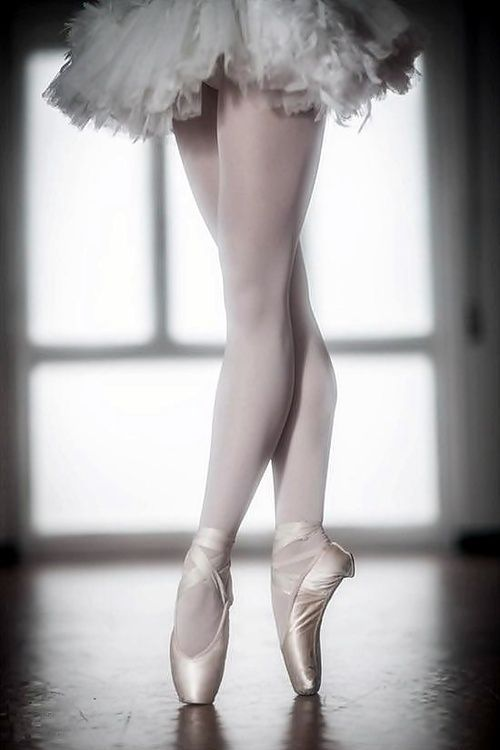
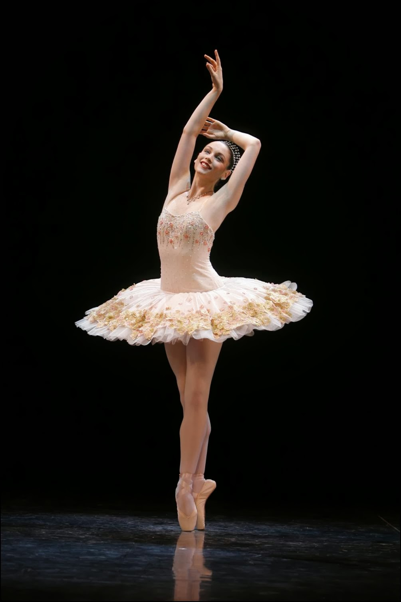
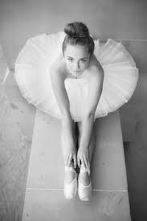
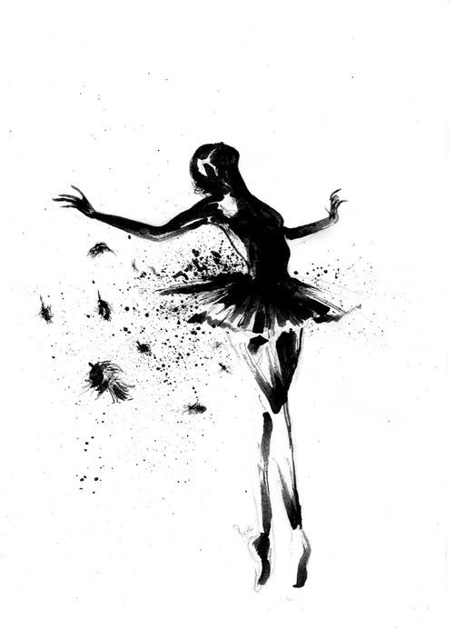
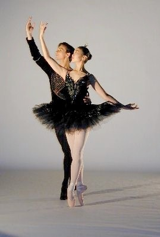

Como arte, el ballet nació en los siglos XV y XVI, en unas lujosas fiestas de las cortes europeas llamadas bailes de máscaras. Gracias al trabajo de maestros de gran vocación, la tradición ha pasado de generación en generación y cada una ha perfeccionado su desarrollo.
A fin de bailar bellamente, has de comprender y hacer tuya la tradición del ballet. Aprenden a apreciarlo que sentirte parte de él. Tu manera de bailar será mucho mas perfecta si también conoces otras artes como la música y la pintura. La sensibilidad hacia otras formas de arte, incluida la naturaleza, mejorarán tu percepción de su belleza.
El ballet actual:
El amor al ballet no es privativo de una pieza particular o de un tiempo determinado. Gente de todos los países lo aman y gozan con su belleza y su gracia es un arte que, por medio del movimiento, hablar corazón a través de los ojos. Como arte vivo vivo, progresa cada día. Actualmente, bailarines y coreógrafos crean ballet nuevos a la vez que siguen representando los clásicos. Para mí es un placer no sólo bailar sino seguir aprendiendo continuamente.
La danza es tan exigente que precisa de ejercicios especiales para desarrollar fuerza.
Hasta los movimientos mas sencillos debes perfeccionarlos al máximo. Es divertido trabajar con otros compañeros. Ayudar a alguien a mejorar su técnica contribuirá a perfeccionar la nuestra. Cuando coreografías tus propios ballets, dispones de libertad para explorar música e ideas distintas. Crear una representación teatral es fuente de inspiración y también de alegría. A punto para bailar: En el escenario, especialmente con los ballets más antiguos, los trajes son ricos y ampulosos pero la ropa que se usa para practicar es muy distinta. En la clase de ballet, donde se aprende antes de subir al escenario, hay que concentrarse en la exactitud de la línea y del movimiento; por tanto, la ropa de ajustarse a estos principios ha de ser práctica y más de oprimir; y a la vez no ha de impedir los movimientos y estiramiento también ha de permitir al profesor verlos con todo detalle.
    
Pelo bien peinado: Asegurate de que llevas el pelo bien peinado y apartado de la cara. Para las chicas es ideal tenerlo lo suficientemente largo, hasta los hombros, como para hacerse un moñito en lo alto de la cabeza.
Calzado: Para que el calzado se ajuste adecuadamente a tu pie, es mejor acudir a una tienda especializada. No ha de ser ancho pero tampoco ha de apretar. Debe ajustarse como un guante a tus pies y, especialmente, los pulgares han de poder trabajar con comodidad a la vez que los sientes sujetos y seguros.
No lleves joyas: No lleves joyas en clase los pendientes resultan peligrosos. Pueden arañar a alguien o romper alguna mallas o leotardo
Para convertirse en bailarín o bailarina profesional necesites voluntad, fortaleza
Para interpretar correctamente el ballet se necesita equilibrio y colocación.
Durante los primeros años de entrenamiento, los pasos que hacen chicos y chicas son casi los mismos. Los chicos pondrán énfasis en la fuerza y la masculinidad, y y las chicas en la levedad y la delicadez.